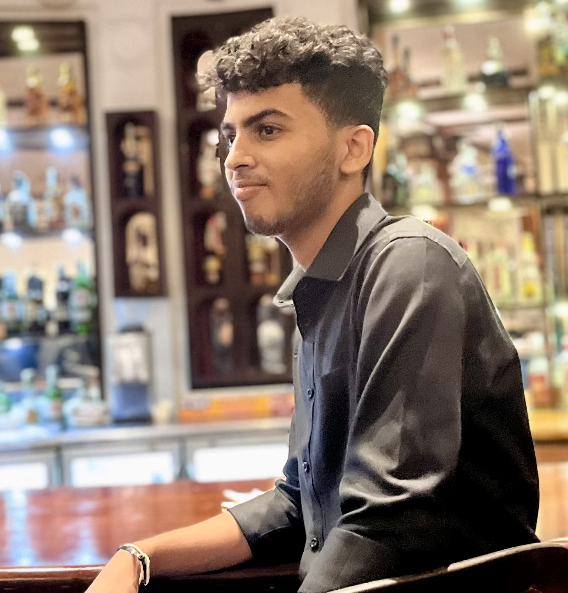

Thamidu Bandara
A Web Developer

Highly motivated and results-oriented professional with a passion for learning
and exploring new opportunities. Possesses exceptional ICT literacy and a
meticulous approach to work, ensuring all tasks are completed with accuracy
and efficiency. Cultivates a positive mindset and fosters a collaborative
environment through strong communication and interpersonal skills. Thrives in
team settings and is adept at building rapport with colleagues, fostering a
productive and inclusive atmosphere.
Qualifications
GCE O/L (2019)
Dharmaraja College Kandy
- Sinhala - A
- Buddhism - A
- History - A
- English - A
- Mathematics - A
- Science - A
- Second Language Tamil - A
- English Literature - A
- ICT - A
GCE A/L (2022)
Dharmaraja College Kandy
- Biology - A
- Chemistry - A
- Physics - A
Work experience
-
2017 - 2019
Held the Secretary post in Scounting Troup
Troup No 4 | 1st Kandy Dharmaraja Scout Group
I worked as the secretary of our scout troup for 2 years and in that time period we
organized various events such as the annual bicycle tour, “Awurudu Festival”, 22lm hike,
and “Hike to Hanthana”. As the secretary of the troup I handled all documentation
processes in all the events.
-
2017
Worked as a school Prefect
Middle Section | Dharmaraja College Kandy
I was a junior prefect of the middle section of Dharmaraja College for a year and in that
year I was able to effectively participate in organizing various events and occasions while
helping the school administration to keep a good learning environement.
-
2020
Parcially worked as a computer operator
Dimuthu Office and Automation, Kurunegala
After the O/L exam, I worked as a part-time computer operator in the family business and
I helped the team with typesetting (Sinhala and English), Spreadsheets, Photoshop
Editing, Data Entry and Automation (Photocopier and Duplo).
-
2020 - Currently
Self Employed
I have been working as a freelancer since 2020 and I have helped many clients with
Documentation, CV designing, Photoshop Editing, Logo designing and Short Video
Editing.
Skills
- Strong communication skills
- ICT proficiency
- Critical thinking
- Organizing skills
- Teamwork
- Flexibility
- Ability to work under pressure
- Creative thinking